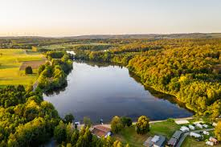

Westerwälder Seenplatte
Ein Naturschutzgebiet mit malerischen Seen und Wanderwegen, ideal für Naturliebhaber und Vogelbeobachter.
Entfernung: etwa 15 Minuten mit dem Auto
Limburg an der Lahn

Besuchen Sie den historischen Limburger Dom und die charmante Altstadt mit ihren Fachwerkhäusern.
Entfernung: etwa 10–15 Minuten mit dem Auto
Veranstaltungs Termine
Klicken Sie auf einen Tag mit Event, um Details anzuzeigen.